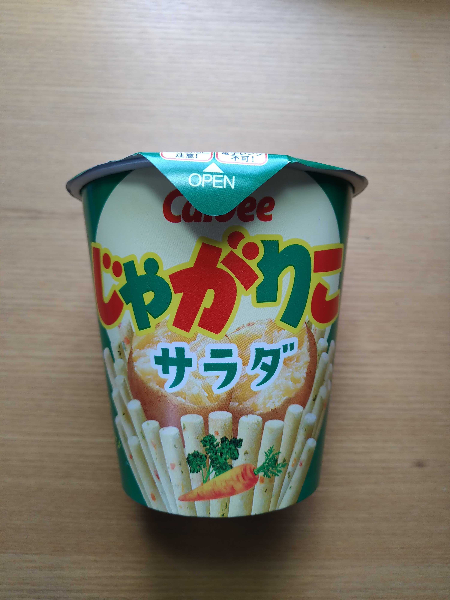
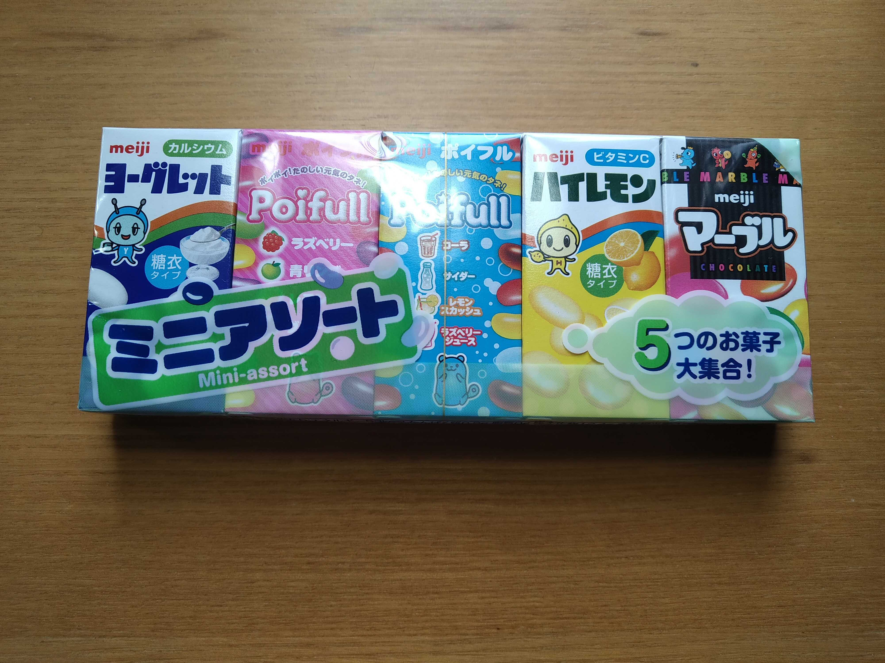
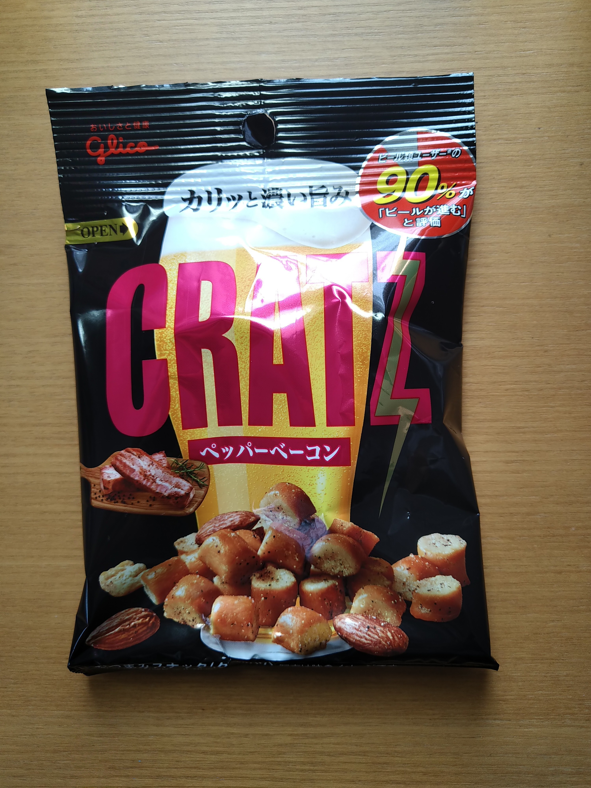
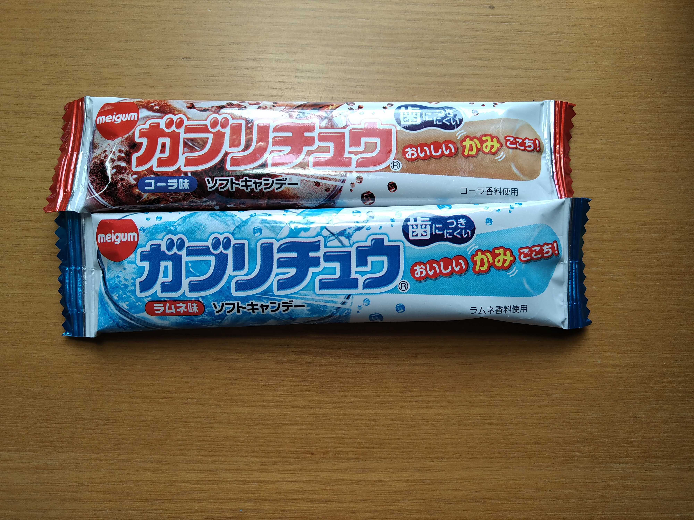
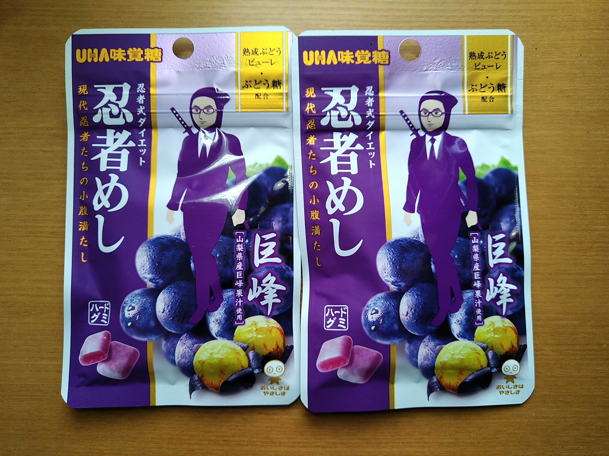
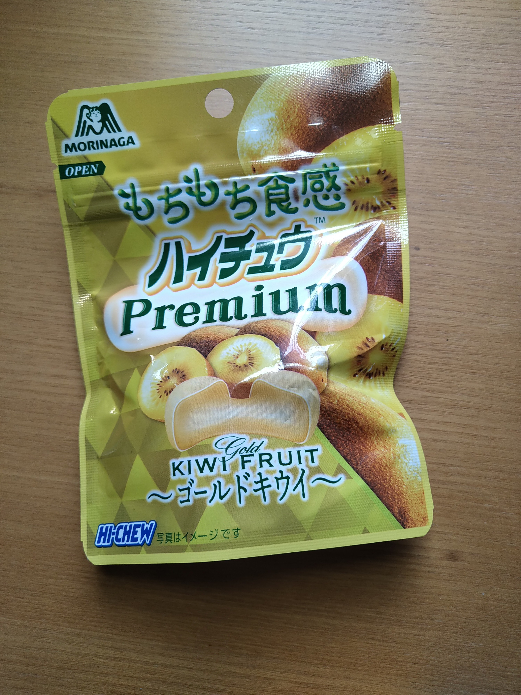

不定期で更新します
週に2か3個は食べています。いろいろな種類がありますがサラダ味が一番好きですね。
ヨーグレット、ハイレモン、ポイフル2種、マーブルチョコの5種類が入ってます。いろんな味を少しずつ楽しみたい人にオススメ
グラム数は42gですが結構満腹感を得られます。私はお酒は全然飲みませんがお酒のおつまみとしても人気があるそうです。
25円でこんなに美味しいお菓子食べれて良いんですか?ってくらいにはオススメです。写真には無かったですがブドウ味もオススメです。
シゲキックスよりもハードな嚙み心地のグミです。めっちゃ嚙むので忍者めしダイエットがあるとかないとか。
普通のハイチュウより値段は高いですが質が上がっています。食感がもちもちしているので普通のハイチュウとは違った食感を楽しめます。
